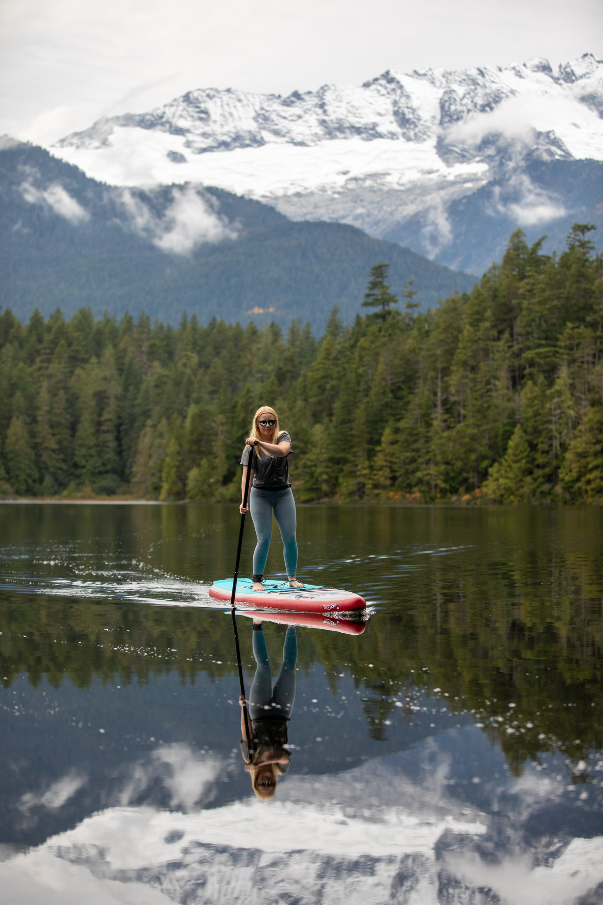

Whistler, BC
SUP drop-off to Alta, Lost, Green, Nita and Alpha Lakes — plus the Whistler RV Park. We handle the haul; you handle the paddle.
How It Works in Whistler
The best Whistler paddle days move between lakes — morning light on Green Lake, an afternoon on Lost Lake, an evening on Nita. With us, you don't have to figure out the gear logistics in between.
We do it differently. You pick the lake (or two, or three over a long weekend), and we deliver boards directly to the launch. Pickup at the same spot when you're done. We're based in Squamish and run the trip up daily in season — book the day before for the best slot.
Where We Deliver
The classic. Warmest of the Whistler lakes, with three launch options — Rainbow Park, Lakeside Park and Wayside Park. Best on a calm morning before the south wind picks up.
Closest to the village — walking distance from Whistler Upper. No motorboats, swim-safe, and quieter once you're past the main beach. Great for first-time paddlers.
Glacial-fed turquoise water, dramatic Wedge and Armchair mountain views. Bigger and colder than Alta — better for confident paddlers and worth getting out early for the colour.
Tucked behind Creekside, small and almost always glass. Easy parking, less foot traffic than Alta or Lost. Sunset paddle territory.
Family-friendly lake at the south end of Whistler with a beach park and dock. Calm, shallow shoreline, perfect with kids.
Drop at Rainbow Park (Alta Lake), pickup at Meadow Park (Green Lake). A one-way downstream paddle — one of the best half-day SUP trips in BC. Best in early summer with higher water.
We've partnered with the RV Park for direct drop-off to campsites. Book all Whistler rentals through us on RentedLocal.
Heading further north? We also deliver to One Mile Lake in Pemberton and can arrange Lillooet Lake drop-offs by request.
5-Star Google Reviews
"We were visiting Whistler and didn't think we could get a canoe rental up there. Jeremy delivered to the RV park and we spent the whole day on the water. The kids absolutely loved it. Thank you!"
"Rented a canoe for the whole weekend to explore Howe Sound. Pickup and dropoff was seamless. The portable rack made it so easy to get to different launch spots. Jeremy really knows this area inside and out."
"Canoeing around Britannia Beach was amazing. Not only that, but we also paddled across the Squamish River to Echo Lake. Couldn't recommend more. Highly recommend this affordable canoe rental service in Squamish, Whistler and Pemberton!"
Good to Know
Alta Lake (Rainbow, Lakeside, Wayside), Lost Lake, Green Lake, Nita Lake, Alpha Lake, the Whistler RV Park & Campground, and Pemberton's One Mile Lake.
Yes — but it's usually easier (and cheaper) to deliver straight to the launch. That way you skip carrying the board through the village. Call (604) 849-8898 and we'll figure out the best plan.
Alta Lake for the classic warm-water Whistler day. Lost Lake if you're staying in the village. Green Lake for the colour and the views (bring a layer — it's colder). Nita and Alpha for quieter family paddles.
Yes. We drop at Rainbow Park (Alta Lake), pick up at Meadow Park (Green Lake). Best in late June — July when flow is good. Mention it when booking.
Same-day works if we have boards free, but in July and August we recommend a day or two ahead, especially for weekend deliveries.
Some Whistler lake parking lots are paid in summer (Lost Lake, Lakeside Park). We deliver directly so you don't need to park — just walk in.
Ready?
Pick a lake, pick a time. We'll meet you there with the boards. Booking the day before is best in peak summer.
Or email squamishcanoerental@gmail.com
Staying in Squamish? See paddleboard delivery in Squamish.